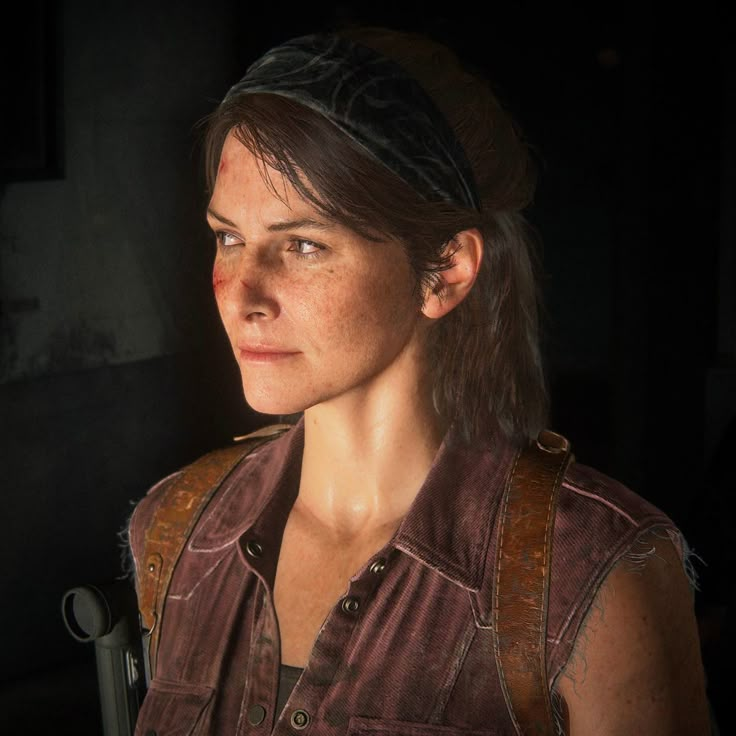
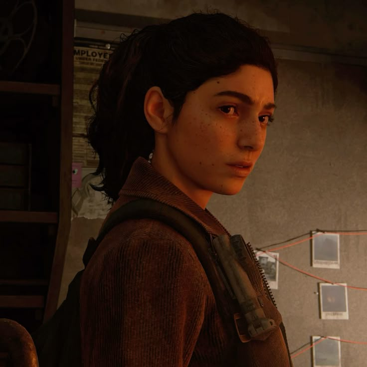

PERSONAGENS SECUNDÁRIOS

TESS TLOU 1
TOMMY TLOU 1 TLOU 2
MARLENE TLOU 1

DINA TLOU 2
TESS
Embora muito capaz e, talvez, mais cruel do que o parceiro de contrabando Joel, Tess superou as dificuldades do mundo brutal para se tornar uma estrategista e negociadora sagaz. Sua liderança e capacidade física a tornaram uma figura respeitada na zona de quarentena de Boston. Embora ela tenha adotado a mentalidade implacável de uma sobrevivente endurecida, ela continua leal, corajosa, e acaba se mostrando altruísta no apoio concedido a Joel e Ellie.
TOMMY
Embora compartilhe a rigidez e a determinação do irmão Joel, a personalidade impulsiva, compassiva e esperançosa de Tommy o torna diferente. Depois de um período lutando com os Vaga-lumes, ele conhece a futura esposa, Maria, e a comunidade dela em Jackson, Wyoming. Com essa nova direção em seus valores, ele procura criar uma vida significativa e rica, apesar das circunstâncias difíceis.
MARLENE
Membro ardente dos Vaga-lumes, Marlene está à frente da luta para derrubar o jugo militar opressivo nas zonas de quarentena. Apesar da experiência apoiando a rebelião, ela continua sendo gentil e compassiva. Sua carreira na medicina garantiu a crença no valor da salvação da humanidade, que ela buscará a qualquer custo.
DINA
Dina é a melhor amiga e confidente otimista e determinada de Ellie. Como Ellie, ela também ficou órfã quando muito jovem, e se viu forçada a aprender a sobreviver sozinha e se tornar autossuficiente. Os valores morais fortes e a natureza extrovertida de Dina estimulam o que há de melhor em Ellie.